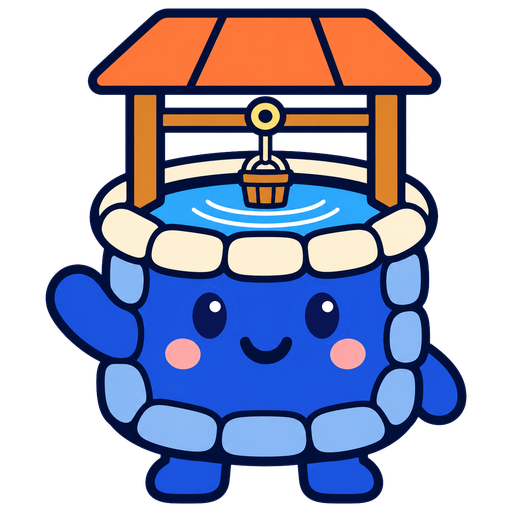

우물지기
말씀우물을 지키는 캐릭터입니다. 찾아오는 사람과 함께 날마다 말씀을 길어 올립니다.

위아래, 옆으로 밀어 돌려 보세요. 누르면 기뻐합니다.
프로필
- 이름
- 우물지기
- 사는 곳
- 말씀우물
- 하는 일
- 날마다 말씀을 길어 올려 함께 나눕니다.
- 성격
- 다정하고 조금 엉뚱합니다. 누구의 이야기든 끝까지 들어 줍니다.
- 좋아하는 것
- 아침에 새로 길은 물, 함께 말씀을 읽는 사람
이름의 뜻
우물지기는 우물을 돌보는 사람입니다. 우물이 막히지 않게 살피고, 찾아온 사람이 물을 길을 수 있게 돕습니다. 말씀우물의 우물지기도 누구나 말씀 앞으로 올 수 있도록 돕습니다.
생김새에 담은 것
- 쌓아 올린 벽돌하루하루 쌓아 가는 믿음의 습관입니다.
- 두레박과 줄날마다 말씀을 직접 길어 올리는 묵상입니다.
- 맑은 물우리 삶을 적시는 하나님의 말씀입니다.
- 지붕누구나 쉬어 갈 수 있는 자리입니다.
우물가에서 만난 예수님
예수님은 야곱의 우물 곁에서 사마리아 여자를 만나 이렇게 말씀하셨습니다. 우물지기는 길을 안내할 뿐이고, 이 물을 주시는 분은 예수님이십니다.
내가 주는 물을 마시는 자는 영원히 목마르지 아니하리니 내가 주는 물은 그 속에서 영생하도록 솟아나는 샘물이 되리라
요한복음 4:14